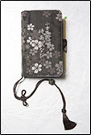

時雨殿がある嵐山へはJR京都駅からJR嵯峨野線（山陰本線）を使っておよそ20分。時代劇の撮影所がある太秦の次の嵯峨嵐山駅で降ります。近くにはJRのほかにも阪急電車や嵐電（京福電鉄・嵐山線）など複数の駅があって、大阪や京都の中心部からのアクセスも抜群です。JR嵯峨嵐山駅から地図を参考ににぎやかなメインストリートを抜けると嵐山を象徴する渡月橋が見えてきます。はじめて時雨殿に訪れる方には、渡月橋から川沿いを上流へ向かうルートがお勧めです。この近辺は懐石料理の料亭や老舗のホテルなどがひっそりと並んでいて、道を歩いていると心がすっと落ち着いてきます。施設へ向かうロケーションもぜひ楽しんでください。
こちらのページに主要駅からのを写真つきでご用意したので、ぜひご利用ください。
嵐山と保津川の織り成す風光明媚な風景を楽しみならが川沿いの道を進んでいくと、時雨殿の建物が見えてきます。到着したら、受付で入場料を払って手荷物は100円返却式ロッカーにあずけます。準備が整ったところで和服姿の案内係にしたがって展示室へ。
最初の展示室では案内係の方から「時雨殿なび」という携帯端末を渡されます。これがニンテンドーＤＳをベースに作られたもので、各種ボタンは省略されているもののタッチパネルで簡単に操作が行えるようになっています。西陣織のカバーや絹１００％の組紐ストラップ、本物の竹を使用した毛筆風のタッチペンなど独自の凝ったデザインにも注目です。暗がりになった展示室には、床一面に大きなスクリーンが広がります。ここでまず楽しめるのが『京都空中散歩』です。足元に京都上空からの景色広がり、「時雨殿なび」を使えば市街地にある特定の施設や京都にある百人一首とゆかりの深い名跡へと案内してくれます。「時雨殿なび」の操作に合わせて、足元の街が様々に反応を返してくれるのが新鮮な感覚です。この『京都空中散歩』、よく見ると様々なものが動いています。
京都駅に到着する新幹線や渋滞の道路に並ぶ自動車などを驚異的な細かさで表現されていて、本当に空中から京都市内を眺めているかのように錯覚します。そのほかにも様々なお楽しみが隠されており、ゲーム気分で探し出すことも可能です。のんびりと京都の上空に浮かんだ飛行船や自動車教習所で車庫入れする自動車をこの広いスクリーン上から探してみるのもいいかもしれません。
任天堂の創業は明治22年。任天堂はテレビゲームを作るずっと前からトランプ・花札・百人一首などさまざまな「かるた」を作ってきました。ニンテンドーＤＳはゲームとして楽しむだけでなく、脳のトレーニングや語学の勉強に役立っていますが、日本独特の文化である花札や百人一首は、ゲームとして楽しむだけでなく、カードそのものが芸術作品として多くの人々に親しまれてきました。 今月号のN.O.Mでは京都嵐山に昨年オープンした百人一首の体験スペース『時雨殿』をご紹介します。 この時雨殿は、単に百人一首を展示するだけでなく、最新のデジタル技術を用いてさまざまな角度から百人一首を紹介しています。そして、その技術には任天堂のゲーム開発のノウハウが活かされているのです。 |
京都上空の散歩をしばらく堪能していると、床のスクリーンが切り替わり、同じ部屋で今度は『大きな札』というアトラクションが始まります。これは「時雨殿なび」に表示された百人一首の札と同じ絵柄の札を床のスクリーン上で探し出し、「時雨殿なび」を持ってその上に移動するという、おそらく世界一大掛かりなかるた取りです。単純な絵合わせとして遊ぶこともできるので、歌を知らない人でも気軽に挑戦できます。いくつかの句が読まれ、その場にいる人たち全員の中から自分の順位が「時雨殿なび」に表示されるので、思わず熱くなってしまいます。見ず知らずの方と仲良くなるチャンスかも。 次の部屋では少し上級者向けの『体感かるた五番勝負』が楽しめます。テレビ画面に映し出された歴史上の人物達を対戦相手に、床のスクリーンに並んだ札を取り合うアトラクションです。そう、床のスクリーンがタッチパネルになっていて、お正月に開催される公式大会などで見かける畳を「スパーンッ！！」と弾きながら札を取り合うアノ感覚を味わえるようになっています。勝ち抜き方式の対戦勝負もすすんで4人目くらいになると下の句を知っていないと勝てないかもしれません。なかなか本格的な勝負が楽しめます。 素早い動作が苦手な方には『謎解きの井筒』がお勧めです。こちらはじっくり思考して答えるタイプ。スクリーンに触れると水面が揺れる演出が心地良いですよ。1階の施設を回ったら、ぜひ2階にも上がってみてください。2階では、百人一首の詠まれた時代の折々の風俗を反映した衣装が、代表的な人物の人形と一緒に展示され、華やかな王朝文化の一幕を今に伝えています。2階の展示室から背後を振り返ると、保津川の向こうに嵐山のやわらかな山並みが広がり、京都に花咲いた遥かな王朝文化に思いをはせることができます。 時雨殿には、このほかにも壁面に飾られた銘板などさまざまな百人一首にちなんだ展示があります。楽しみながら体験し学べる時雨殿。観光で嵐山を訪れた際は、ぜひ時雨殿に立ち寄って、テレビゲームでもない携帯型ゲームでもない任天堂のエンターテインメントをお楽しみください。 |